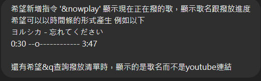

一氣之下就直接
前言
#
其實真的沒啥技術含量，因為代碼真的都是叫GPT幫我搓出來的
但還是想說丟上來好了，畢竟在自己本地架機器人就不用看其他人的臉色了 (X
基本上會從頭開始講如何建立，但有些我沒碰到的功能就不會特別介紹
因為我自己也不懂
想抄代碼的可以直接跳到那邊就好了
但還是放一下跟GPT溝通的流程之類的 水一下內容
建立DC機器人
#
首先先到
Discord Developer Portal 建立一個機器人出來
登入後左上角New Application點下去，再取個名子，專屬你ㄉ機器人就誕生了
剛進去就可以先看到設定的介面，這邊基本上就是可以設定機器人的名稱、頭貼、還有點進機器人會看到的描述
然後DESCRIPTION的部分會在 關於我 的部分顯示

取得token #
接著到旁邊選單選擇Bot
在這邊可以額外設定機器人的橫幅(BANNER)
而我們這邊主要要取得機器人的TOKEN
點下去Reset Token確認後取得全新的token先自己記起來
切記不要外洩 因為有token就能夠執行你的機器人了
Reset Token接著滑到下面Privileged Gateway Intents的部分，接著把三個選項都打勾
這邊主要是要讓機器人能夠接收指令與用戶互動
邀進伺服器 #
進入OAuth2的部分，滑到最下面的OAuth2 URL Generator
主要勾選bot就好
而下面的BOT PERMISSIONS則是勾選Administrator
直接拿所有權限就不用再慢慢設定了
再來往下看就可以在 GENERATED URL 看到你機器人的邀請連接了
基本上機器人的部分就到這邊了 再來就是要寫code的部分了
代碼
#
安裝所需的庫 #
打開你的cmd 一起快樂安裝
pip install discord.py youtube_dl
pip install yt-dlp
ffmpeg安裝 #
前往
BtbN FFmpeg Releases下載 ffmpeg-master-latest-win64-gpl.zip
解壓縮後丟到一個不太會動到的地方
接著打開環境變數，win11打開環境變數的方法如下
設定 系統 系統資訊 進階系統設定 再來就能看到環境變數了
接著選擇Path然後編輯，新增你剛剛解壓縮下來的檔案中bin資料夾的位置
(C:\ffmpeg\bin)
這樣就順利安裝完成了，可以檢查看看有沒有順利安裝，沒有的話就重開機看看
ffmpeg -version
bot.py #
主要可以分兩種撥放方式
1.線上串流(較不穩定)
2.下載到本機(很穩定)
線上串流 #
先講第一種線上串流的部分
穩定性的部分就真的很爛 大概每首歌都撥不完 大概撥個一兩分鐘左右而已
import discord
from discord.ext import commands
import yt_dlp as youtube_dl
import asyncio
intents = discord.Intents.default()
intents.message_content = True
intents.voice_states = True
bot = commands.Bot(command_prefix='&', intents=intents)
ytdl_format_options = {
'format': 'bestaudio/best',
'outtmpl': '%(extractor)s-%(id)s-%(title)s.%(ext)s',
'restrictfilenames': True,
'noplaylist': True,
'nocheckcertificate': True,
'ignoreerrors': False,
'logtostderr': False,
'quiet': True,
'no_warnings': True,
'default_search': 'auto',
'source_address': '0.0.0.0'
}
ffmpeg_options = {
'options': '-vn'
}
ytdl = youtube_dl.YoutubeDL(ytdl_format_options)
class YTDLSource(discord.PCMVolumeTransformer):
def __init__(self, source, *, data, volume=0.5):
super().__init__(source, volume)
self.data = data
self.title = data.get('title')
self.url = data.get('url')
@classmethod
async def from_url(cls, url, *, loop=None, stream=False):
loop = loop or asyncio.get_event_loop()
data = await loop.run_in_executor(None, lambda: ytdl.extract_info(url, download=not stream))
if 'entries' in data:
data = data['entries'][0]
filename = data['url'] if stream else ytdl.prepare_filename(data)
return cls(discord.FFmpegPCMAudio(filename, **ffmpeg_options), data=data)
queue = asyncio.Queue()
queue_urls = []
current_player = None # 用於儲存當前播放的音樂
@bot.event
async def on_ready():
print(f'Logged in as {bot.user}')
@bot.command()
async def p(ctx, url):
if not ctx.message.author.voice:
await ctx.send(f"{ctx.message.author.name} is not connected to a voice channel")
return
channel = ctx.message.author.voice.channel
if ctx.voice_client is None:
voice_client = await channel.connect()
else:
voice_client = ctx.voice_client
# Queue the song
await queue.put(url)
queue_urls.append(url)
if not voice_client.is_playing():
await play_next_song(ctx, voice_client)
@bot.command()
async def leave(ctx):
if ctx.voice_client:
await ctx.guild.voice_client.disconnect()
@bot.command()
async def q(ctx):
if queue_urls:
queue_list = "\n".join([f"{i+1}. {url}" for i, url in enumerate(queue_urls)])
await ctx.send(f"Current queue:\n{queue_list}")
else:
await ctx.send("The queue is currently empty.")
@bot.command()
async def s(ctx):
if ctx.voice_client and ctx.voice_client.is_playing():
ctx.voice_client.stop()
await ctx.send('Skipped the current song.')
# Optionally, automatically play the next song
if not queue.empty():
await play_next_song(ctx, ctx.voice_client)
else:
await ctx.send("No song is currently playing.")
async def play_next_song(ctx, voice_client):
global current_player
if not queue.empty():
url = await queue.get()
queue_urls.pop(0)
async with ctx.typing():
try:
player = await YTDLSource.from_url(url, loop=bot.loop, stream=True)
current_player = player
voice_client.play(player, after=lambda e: asyncio.run_coroutine_threadsafe(play_next_song(ctx, voice_client), bot.loop))
await ctx.send(f'正在撥放: {player.title}')
except Exception as e:
await ctx.send('error:')
print(e)
else:
await ctx.send('no song')
bot.run('你的token')
反正就又卡又容易斷掉 不如乖乖下載下來
下載到本地 #
因為是現在還有在用ㄉ，所以加了一些功能
基本上就自己看一下code就能知道具體功能了 這邊就不多講了
然後下載到本地的話也不是全部下載，我是設定成一次本地只會有一首歌而已，然後撥下一首的時候就把前面的刪掉，所以不用怕自己電腦被灌爆 >.0
import discord
from discord.ext import commands
import yt_dlp as youtube_dl
import asyncio
import os
import datetime
intents = discord.Intents.default()
intents.message_content = True
intents.voice_states = True
bot = commands.Bot(command_prefix='&', intents=intents)
ytdl_format_options = {
'format': 'bestaudio/best',
'outtmpl': '%(extractor)s-%(id)s-%(title)s.%(ext)s',
'restrictfilenames': True,
'noplaylist': True,
'nocheckcertificate': True,
'ignoreerrors': False,
'logtostderr': False,
'quiet': True,
'no_warnings': True,
'default_search': 'auto',
'source_address': '0.0.0.0'
}
ffmpeg_options = {
'options': '-vn'
}
ytdl = youtube_dl.YoutubeDL(ytdl_format_options)
class YTDLSource(discord.PCMVolumeTransformer):
def __init__(self, source, *, data, volume=0.5):
super().__init__(source, volume)
self.data = data
self.title = data.get('title')
self.url = data.get('url')
self.duration = data.get('duration')
@classmethod
async def from_url(cls, url, *, loop=None, stream=False):
loop = loop or asyncio.get_event_loop()
data = await loop.run_in_executor(None, lambda: ytdl.extract_info(url, download=not stream))
if 'entries' in data:
data = data['entries'][0]
filename = data['url'] if stream else ytdl.prepare_filename(data)
return cls(discord.FFmpegPCMAudio(filename, **ffmpeg_options), data=data), filename
queue = asyncio.Queue()
queue_urls = []
current_player = None
start_time = None
downloaded_file = None # Only one file will be downloaded at a time
@bot.event
async def on_ready():
print(f'Logged in as {bot.user}')
@bot.command()
async def p(ctx, url):
if not ctx.message.author.voice:
await ctx.send(f"{ctx.message.author.name} is not connected to a voice channel")
return
channel = ctx.message.author.voice.channel
if ctx.voice_client is None:
voice_client = await channel.connect()
else:
voice_client = ctx.voice_client
# Add the song to the queue
await queue.put(url)
queue_urls.append(url)
# Get the song title to display the added message
data = ytdl.extract_info(url, download=False)
title = data.get('title', 'Unknown title')
await ctx.send(f"已將 {title} 加入待撥清單")
if not voice_client.is_playing():
await play_next_song(ctx, voice_client)
@bot.command()
async def leave(ctx):
if ctx.voice_client:
await ctx.guild.voice_client.disconnect()
@bot.command()
async def q(ctx):
if queue_urls:
queue_list = []
for url in queue_urls:
data = ytdl.extract_info(url, download=False)
title = data.get('title', 'Unknown title')
queue_list.append(title)
queue_msg = "\n".join([f"{i+1}. {title}" for i, title in enumerate(queue_list)])
await ctx.send(f"Current queue:\n{queue_msg}")
else:
await ctx.send("The queue is currently empty.")
@bot.command()
async def s(ctx):
if ctx.voice_client and ctx.voice_client.is_playing():
ctx.voice_client.stop()
await ctx.send('Skipped the current song.')
else:
await ctx.send("No song is currently playing.")
@bot.command()
async def nowplay(ctx):
if current_player:
elapsed = (datetime.datetime.now() - start_time).total_seconds()
elapsed_str = str(datetime.timedelta(seconds=int(elapsed)))
duration_str = str(datetime.timedelta(seconds=int(current_player.duration)))
progress_bar = create_progress_bar(elapsed, current_player.duration)
await ctx.send(f"Now playing: {current_player.title}\n{elapsed_str} {progress_bar} {duration_str}")
else:
await ctx.send("No song is currently playing.")
def create_progress_bar(elapsed, duration, bar_length=20):
progress = elapsed / duration
bar = '-' * bar_length
pos = int(bar_length * progress)
progress_bar = bar[:pos] + 'o' + bar[pos+1:]
return progress_bar
@bot.command()
async def stop(ctx):
if ctx.voice_client:
if ctx.voice_client.is_playing():
ctx.voice_client.pause()
await ctx.send('已暫停播放.')
elif ctx.voice_client.is_paused():
ctx.voice_client.resume()
await ctx.send('已繼續播放.')
else:
await ctx.send('沒在播歌')
else:
await ctx.send('沒在語音中')
async def play_next_song(ctx, voice_client):
global current_player, start_time, downloaded_file
if not queue.empty():
url = await queue.get()
queue_urls.pop(0)
async with ctx.typing():
try:
# Delete the previous downloaded file if it exists
if downloaded_file and os.path.isfile(downloaded_file):
os.remove(downloaded_file)
player, filename = await YTDLSource.from_url(url, loop=bot.loop, stream=False)
current_player = player
start_time = datetime.datetime.now()
downloaded_file = filename # Update the downloaded file
voice_client.play(player, after=lambda e: asyncio.run_coroutine_threadsafe(play_next_song(ctx, voice_client), bot.loop))
await ctx.send(f'正在播放: {player.title}')
except Exception as e:
await ctx.send('error:')
print(e)
else:
await ctx.send('no song.')
bot.run('你ㄉtoken') # 替換為你的實際 Bot Token
運行方法 #
其實就只要運行py檔案就好了
看你是要在cmd中執行還是直接在編譯器(我是用vs)跑都可以
python bot.py
與chatGPT交流
#
夢ㄉ開始
不知道為甚麼chatGPT一開始都是用java寫的，可能因為其實普遍都是用java寫吧，但我看不懂java所以都叫他寫python(
其實好像也沒有甚麼特別要講的，基本上就都是想要什麼功能就講甚麼
我覺得比較好玩的大概有nowplay功能而已
就是跟他說—–o—-來表達進度條

大概就這樣，有甚麼問題不要DM我，去問chatGPT這都他寫的(X